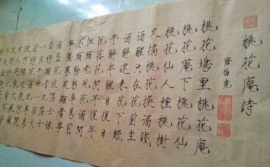
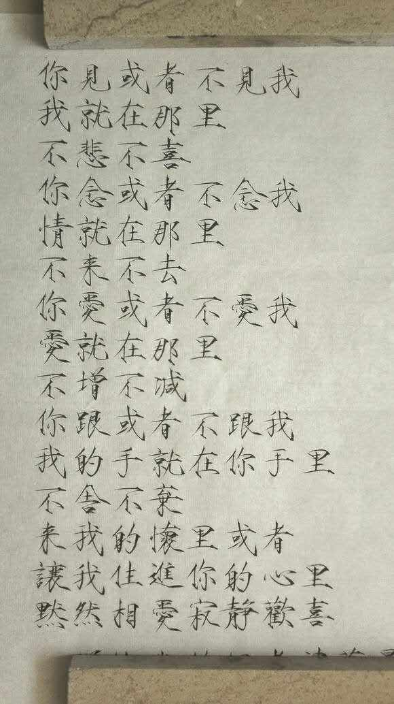
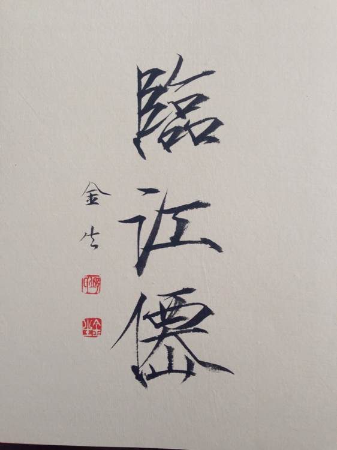
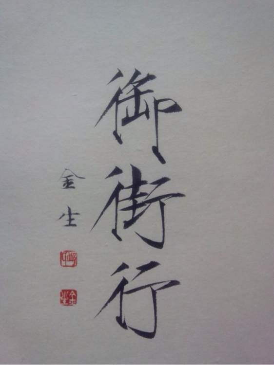
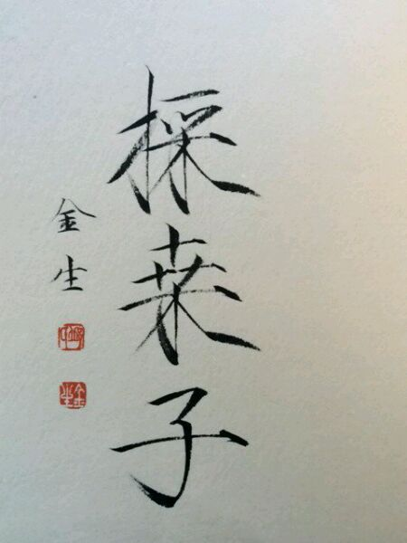

正文:
更新一下啦。
谢谢大家，想不到我这业余爱好者的字还能收到大家这么多好评，哈哈
那我翻翻箱底，再污染污染大家眼睛~随便向大家@瘦金体。
先说一些前话，小学到高中写字都是极丑，按老师的说法：“这位同学的卷面分以后是别想了，这作文写得，我都怕阅卷人直接不看了。”，后来一想，不行，这不是看不起我，要打脸，要逆袭！
于是开始想练字，然后就看到了瘦金体，入坑了。
如果有小伙伴也要入坑，一定谨慎！！
因为，瘦金体容易入魔！！！！！
如果你学，就从《千字文》开始，基础打牢在练后期的行楷，顺便看看视频。
毛笔：用长锋的，最好偏硬一点，但是小楷笔、勾线笔、秀丽笔都是可以的。
而且瘦金体处理不好，很容易让人觉得锋芒毕露，大家练的时候要注意，毕竟老一辈的比较相信字如其人，我这字以前到现在还是会被以前的老师说
那时候写了一年，跟入魔一样，每天都在写字，上课下课，书上写满了都是自己练字的笔迹，后来写出了这个，觉得天下无敌了，毕竟高中还真没人写瘦金体，卷面分满分，从被语文老师重点批评的方面例子变成了重点夸奖的同学，学校比赛也能拿个一等奖，哈哈哈哈
后来上大学，大一去参加书画比赛，才知道之前的自己是井底之蛙，写得好的比自己不知道凡几，随便一个艺术生都可以吊打我，很多都是写了好几年的，还有一个女生，居然从小就是开始练。
不过我不放弃，为什么，因为在大学，除了我，居然没一个写瘦金体的，不能忍，作为此学派的“代表人物”，我是扛着大旗来的。
所以大二写了这幅去参加比赛。
之后就不表了，哈哈
这是现在的字，这才是瘦金体，最开始答的，有太多的个人特点，会被真正喜欢书法的人骂，因为这样写是不爱惜毛笔的写法，不要学我（捂脸）。


最后向大家@邱金生老师，当代写瘦金体代表人物之一，写的真是好看



——————————原答案————————————
瘦金体！
高中接触，满打满算刚好5年，哈哈。
第一次看到的时候，顿时惊为天人，才知道毛笔字还能这样写。虽然不喜欢赵佶，觉得当皇帝不行，但书法造诣确实高。
瘦金体的笔架结构我个人觉得是最美的(个人噢)，瘦直收笔连丝有度，笔锋婉转凌厉畅快，当然我没学到骨子，只能献丑了。